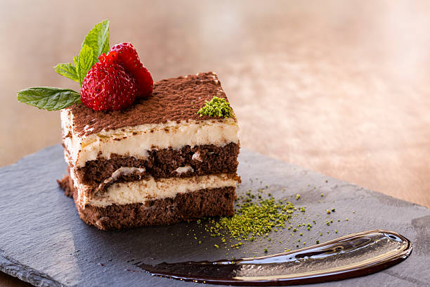

Home
Tiramisu

Description
Tiramisu is a classic Italian dessert featuring layers of coffee-soaked ladyfingers and creamy mascarpone filling, dusted with cocoa powder. Its rich and decadent taste is balanced by the bitterness of coffee, making it a perfect end to any meal.
To make Tiramisu, ladyfingers are dipped briefly in coffee and layered in a dish. A creamy mixture of mascarpone, eggs, and sugar is spread between layers. After chilling for several hours, the dessert is topped with cocoa powder, creating a heavenly treat with a perfect balance of sweetness and texture.
Ingredients:
- 200g ladyfingers (savoiardi)
- 2 cups strong coffee, cooled
- 3 eggs, separated
- 1/2 cup sugar
- 250g mascarpone cheese
- Unsweetened cocoa powder (for dusting)
Steps :
- Whisk egg yolks with sugar until creamy. Add mascarpone and mix until smooth. Beat egg whites until stiff peaks form, then fold into the mascarpone mixture.
- Dip ladyfingers in coffee and layer them in a dish. Spread mascarpone mixture over each layer.
- Repeat layers, finishing with the cream on top. Chill for at least 4 hours. Dust with cocoa powder before serving.